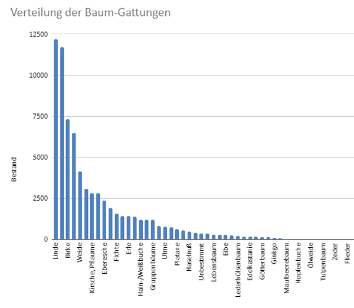

Die neuesten Beiträge
Wieviele Bäume stehen in Rostock?
Die Welt der Open Data bietet faszinierende Fundstücke. So stellt beispielsweise die deutsche Stadt Rostock ein Inventar aller ihrer Bäume auf der Plattform europeandataportal.eu zum Download bereit. Zu jedem einzelnen Baum erfahren wir, welcher Art und Gattung er angehört, wie hoch er ist, welchen Durchmesser sein Stamm und seine Krone aufweisen. Eine schöne Sache, leider mit kleinen Fehlern.
Der veröffentlichte Datensatz umfasst die Bäume des Baumkatasters der Hanse- und Universitätsstadt Rostock. Er wird in der Regel alle 3 Tage auf den neuesten Stand gebracht. Mir liegt die Version vom 09.09.2020 03:24 vor. Gemäss diesem Datensatz stehen in Rostock 71'809 Bäume, die sich auf 82 Gattungen und 459 Arten verteilen.
Welche Bäume sind beliebt?
Aus den Zahlenwerten lassen sich anschauliche Diagramme erstellen, etwa ein Histogramm der Stammumfänge oder ein Streudiagramm, das den Zusammenhang zwischen Stammumfang und Baumhöhe zeigt. Immer wieder eindrücklich ist der Vergleich verschiedener Populationen miteinander. Betrachten wir, wieviele Bäume jeweils einer bestimmten Gattung angehören und sortieren die Zahlen in absteigender Reihenfolge, so erhalten wir ein Bild, das sehr an die klassische Pareto-Verteilung erinnert.
Aus der Schule kennen wir vielleicht noch den Begriff der "Normalverteilung". Bei dieser fallen 68% der Ergebnisse einer Messung in einen durch den Mittelwert (Erwartungswert) und die Standardabweichung definierten Bereich, nämlich den Bereich zwischen Mittelwert minus Standardabweichung und Mittelwert plus Standardabweichung (M ± σ). Diese Art der Verteilung finden wir häufig bei körperlichen Merkmalen wie Gewicht und Grösse, annähernd auch bei der Lebenserwartung, und per definitionem beim Intelligenzquotienten. Die Pareto-Verteilung hingegen finden wir dort, wo man Beliebtheit oder Bevorzugung misst: Einwohnerzahlen von Städten, Followers auf Social Media, Vermögen pro Kopf oder Klickzahlen von Online-Artikeln. Überall dort wirkt das Prinzip: wer hat, dem wird gegeben.

Zur Erinnerung: Die Pareto-Verteilung wird auch 80-zu-20-Regel genannt, weil sich 80% des Gemessenen auf 20% der zu messenden Gruppierungen verteilt oder beispielsweise 80% des Zeitaufwandes in einem Callcenter auf 20% der Anrufe. Bei den Bäumen von Rostock ist die Verteilung noch steiler als bei der klassischen Pareto-Verteilung: Die 12 am häufigsten vorkommenden Baumgattungen machen 81% des gesamten Baumbestandes, aber nur 15% der verschiedenen Gattungen aus. Man kann es auch so ausdrücken: Wenn ich diese 12 Baumgattungen auf Anhieb erkenne, beträgt die Wahrscheinlichkeit, dass ich auf die Frage "Und was für ein Baum ist das?" richtig antworte, knapp über 80 Prozent.
Daten nicht unbesehen übernehmen!
Etwas anderes lässt sich an dem hier betrachteten Datensatz auch deutlich erkennen: Daten sollten nie zum Nennwert genommen, sondern immer plausibilisiert werden. Wenn ich mir die Verteilung der Baumhöhen anschaue, stelle ich fest, dass 59 Bäume zwischen 40 und 60 Meter, 19 Bäume zwischen 60 und 80 Meter und 25 Bäume höher als 80 Meter sind. Angesichts der Tatsache, dass es in Europa wahrscheinlich keinen Baum gibt, der den 73 Meter hohen Eucalyptus diversicolor mit Namen Karri Knight im Valle de Canas, Portugal überragt, deuten auch die Prozentzahlen der Messwerte auf fehlerhafte Daten hin: in die Kategorie '40 Meter oder grösser' fallen gerade einmal 0.15% der Messwerte. Für eine saubere Auswertung sollte man diese Werte löschen.
Weiterführende Links
- Monumentale Bäume in Europa
- Baumkataster der Hanse- und Universitätsstadt Rostock auf dem Europäischen Datenportal
- Rostock in Zahlen
- Baumbericht der Stadt Rostock für das Jahr 2019 (PDF)
- Eine Publikation der ETH Zürich zum Thema Schätzen von Indikatoren hinsichtlich der Bestandesstruktur von Gebirgsnadelwäldern auf der Basis von LiDAR-Daten (PDF)